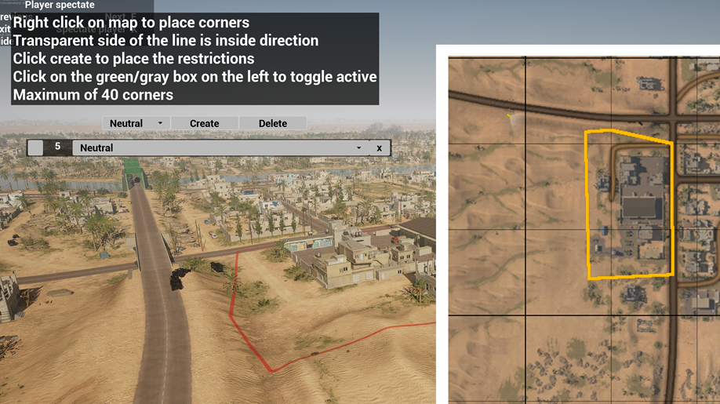
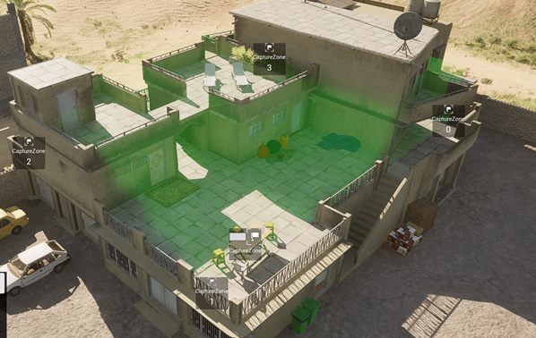

Title

The idea for this mod is to allow for the 29th Infantry division community to build scenarios for our one life game style.
It has been a long running project that has been worked on occasionally with it being around 6 years now. Some others members have also worked on it but I have made a lot of the core features that get used almost every time. It is fairly configurable for what happens at what stage but the overhead for who is running the scenario is inteded to be only a few button presses for every round (usually from 10 to 15 minutes).
The challenge has been to work in the confines of the squad SDK that wants things to be done in certain ways but also does not expose some functions that would make developing more convenient. Another challenge was designing something that is meant to be easy to use but also to extend. I have done a few rewrites of the systems and recently I have been able to add things without feeling any pain from pre-existing code.
Some of the features are: Controlling objects and placing them but also configuring each one to respawn or disabling damage of some more specific features, Controlling round flow (automation would be possible but has been intentionally left out), And added some more interesting objectives.
Designing the interfaces for those has been interesting and has taught me a lot. The visuals are not ideal as I haven't gone out of my way to really work on them. Some of the more interesting objects have been the free form capture zone that can take the shape of a polygon and the movement restrictions that can be placed similarly. Another two are a laptop that needs to be carried to a goal and the movable weapons that I have added. These two required a bit of setup through the squad inventory system.
All of these have been required to work in multiplayer scenarios and have taught me a lot about networked games. Specifically in unreal.


A link to the mod on the steam workshop